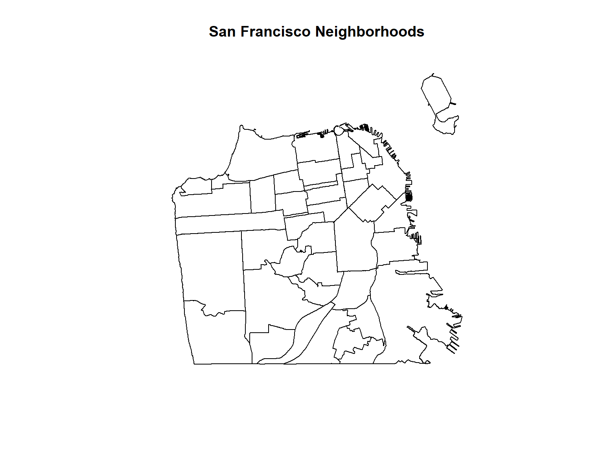
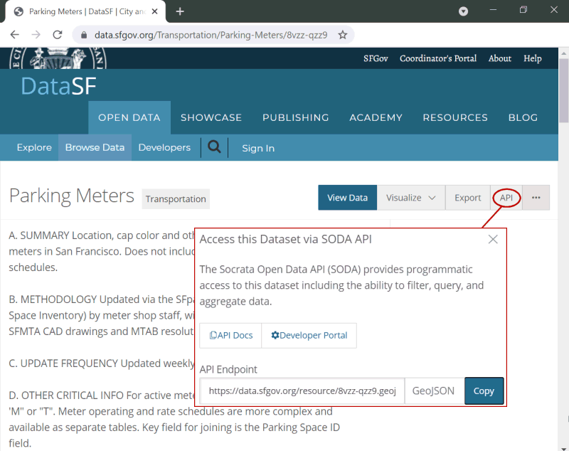
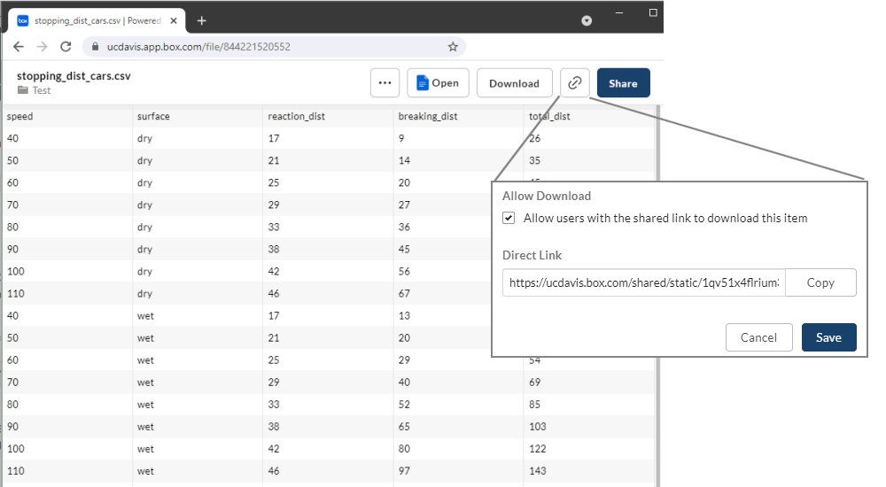
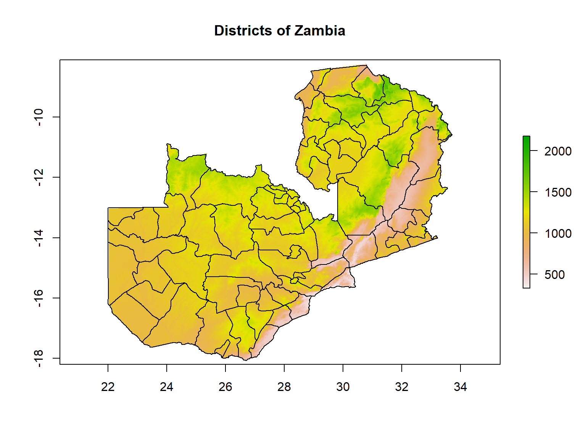
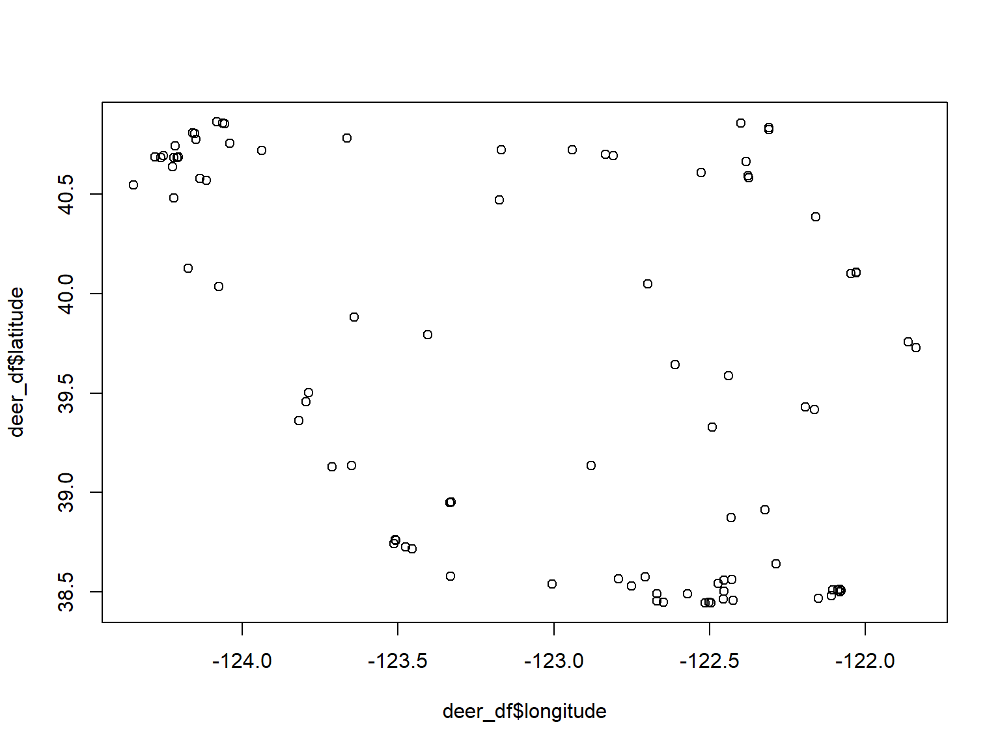
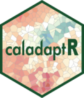
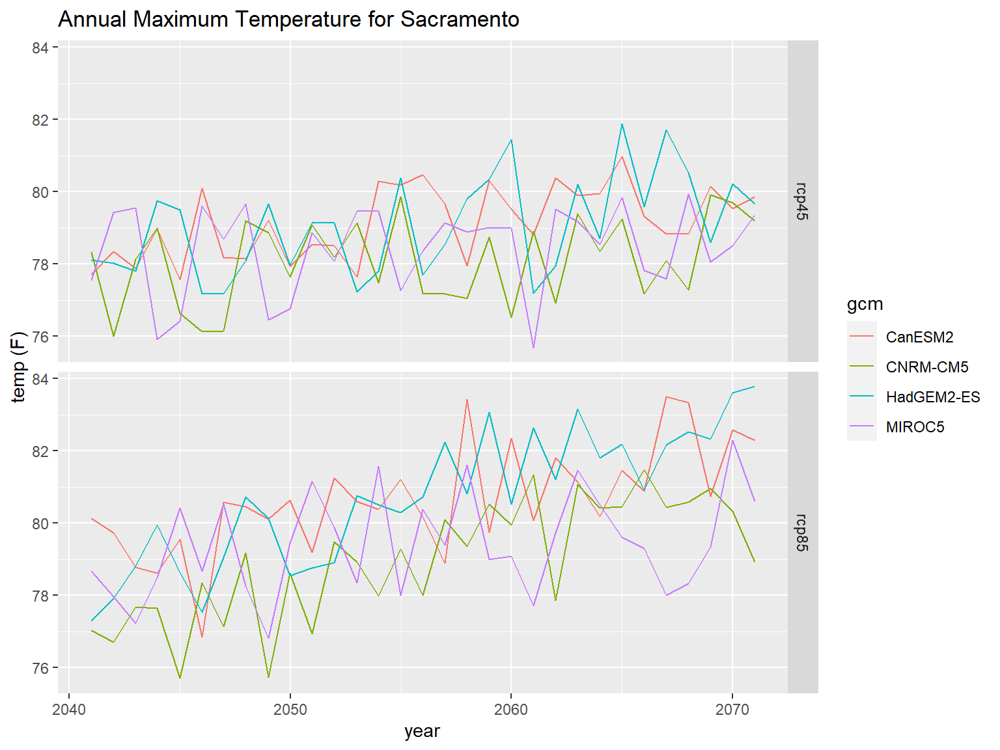
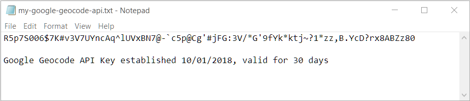

Getting Data from APIs
API = Application Programming Interface.
It is both a translator and a messenger between two different programs.
Common Uses of APIs
There are four general approaches to importing data directly into R:
Data packages
Import functions that take URLs
API packages
Write your own download code
Packages that primarily contain datasets are commonly known as data packages.
When you install the package, you’re actually downloading the data to your hard drive. This makes them convenient - provided you have enough hard drive space!
spData. Various datasets for spatial analysis.
spDataLarge. Large datasets for spatial analysis, to accompany the Geocomputation with R book.
USAboundaries. Current and historical
boundaries for US cities, counties, and states.
CRAN doesn’t like to host data packages because they can be rather large. So you may have to install them from another repository such as GitHub, Bioconductor, etc.
Many functions that import data from local files can also be used to download data from online sources, provided the URL returns data in a standard format. Examples:
library(sf)
sf_nb <- read_sf("https://data.sfgov.org/resource/j2bu-swwd.geojson")
plot(sf_nb %>% st_geometry(), main = "San Francisco Neighborhoods")
ca_breweries_df <- read.csv("https://raw.githubusercontent.com/ucanr-igis/rspatial_data/master/data/ca_breweries.csv")
head(ca_breweries_df)## Name Address City State Phone Type
## 1 10 Mile Brewing Company 1136 E Willow St Signal Hill CA (562) 612-1255 Brewery
## 2 101 North Brewing 1304 Scott St Suite D Petaluma CA (707) 778-8384 Brewery
## 3 14 Cannons 31125 Via Colinas Suite 907 Westlake Village CA (818) 652-6971 Brewery
## 4 21st Amendment Brewery - San Leandro 2010 Williams St San Leandro CA Brewery
## 5 2Kids Brewing Company 8680 Miralani Drive San Diego CA (858) 480-5437 Brewery
## 6 32 North Brewing Company 8655 Production Ave Suite A Sand Diego CA 619-363-2622 Brewery
If you need to download a file programmatically, use
download.file().
If you need to download a zip file, you can download it to a temp
file, unzip the contents where they should go (with
unzip()), then delete the temp file.
Many data providers have a ‘preview’ page for a dataset, and (hopefully) a Direct Link.
You want to use the Direct Link with functions that accept a URL.


To get the direct link for a file on Google Drive, visit:
https://buildbrothers.com/gdrive-generator/
The the next best option is to find an API package that is designed to download data.
API Packages have custom R functions to download specific datasets from specific online data portals.
Example: tidycensus
tidycensus makes it easy to grab census data. The
following command will download median household income from the
American Community Survey by census tracks in San Francisco County, and
return the results as a tibble.
## Get median household income from the American Community Survey
## by census tracks in San Francisco County
library(tidycensus)
andys_api_key <- readLines("~/My Keys/census-api-key.txt", n=1)
tidycensus::census_api_key(andys_api_key)
median_hhinc_tbl <- tidycensus::get_acs(state = "CA",
county = "San Francisco",
geography = "tract",
variables = "B19013_001")
median_hhinc_tbl %>% slice(1:6)## # A tibble: 6 × 5
## GEOID NAME variable estimate moe
## <chr> <chr> <chr> <dbl> <dbl>
## 1 06075010101 Census Tract 101.01, San Francisco County, California B19013_001 78661 21717
## 2 06075010102 Census Tract 101.02, San Francisco County, California B19013_001 NA NA
## 3 06075010201 Census Tract 102.01, San Francisco County, California B19013_001 159647 47139
## 4 06075010202 Census Tract 102.02, San Francisco County, California B19013_001 192500 41795
## 5 06075010300 Census Tract 103, San Francisco County, California B19013_001 136643 27043
## 6 06075010401 Census Tract 104.01, San Francisco County, California B19013_001 115170 39013Benefits of using an API package:
Example API packages:
raster::getdata()tidycensustigriswbstats
There are 100s of ‘niche’ API Packages in the R universe. For example twitteR is an R package which provides access to the Twitter API.
To search for an API package for a specific data source, try Google or search CRAN packages by name.
See also: ROpenSci Data Access Packages
raster::getData() can download the following datasets
directly into R:
To specify which area you want, you either pass a country abbreviation (alt or GADM) or a latitude-longitude coordinate (SRTM and worldclim).
There’s another getData() function in another package,
so always use the raster::getData() prefix.
To see the three-character ISO3 codes for each country, run
raster::getData('ISO3')
Downloads are cached by default. If you don’t want the temporary
files saved, pass download=FALSE.
Let’s download and plot the District boundaries and DEM for Zambia.
## Warning in raster::getData(name = "alt", country = "ZMB", mask = "TRUE"): getData will be removed in a future version of raster
## . Please use the geodata package instead## Warning in raster::getData(name = "GADM", country = "ZMB", level = 2): getData will be removed in a future version of raster
## . Please use the geodata package insteadclass(zmb_alt); class(zmb_districts)
plot(zmb_alt, main="Districts of Zambia")
plot(zmb_districts, col=NA, border="black", add=TRUE)## [1] "RasterLayer"
## attr(,"package")
## [1] "raster"
## [1] "SpatialPolygonsDataFrame"
## attr(,"package")
## [1] "sp"
Using the raster::getData() to plot the administrative
boundaries of a country of your choice. See what the different values of
the level argument return.
iNaturalist is a global community of naturalists that use the iNaturalist app to share observations and communicate. Over 73m observations to date!
You can access iNaturalist data via the rinat API client package.
## install.packages("rinat")
library(rinat)
library(sf)
# Define spatial boundaries
sample_bounds <- c(38.44047, -125, 40.86652, -121.837)
## Get observations (first 100)
deer_df <- get_inat_obs(query = "Mule Deer", bounds = sample_bounds)
## Plot results
plot(deer_df$longitude, deer_df$latitude)

caladaptR provides functions to directly import climate data from Cal-Adapt, a climate data portal for the western USA. The data come in as data frames or rasters.
To retrieve data, you first construct a “request object”, which is like an order form. This gets fed into a function that fetches data (more info).
library(caladaptr)
sac_tasmax_cap <- ca_loc_pt(coords = c(-121.4687, 38.5938)) %>% ## specify a location
ca_gcm(gcms[1:4]) %>% ## specify climate model(s)
ca_scenario(c("rcp45","rcp85")) %>% ## select emission scenarios(s)
ca_cvar(c("tasmax")) %>% ## select climate variables
ca_period("year") %>% ## select a temporal aggregation period
ca_years(start = 2040, end = 2070) ## select start and end dates
sac_tasmax_tbl <- ca_getvals_tbl(sac_tasmax_cap, quiet = TRUE) %>%
mutate(temp_f = units::set_units(val, degF))
library(ggplot2)
ggplot(data = sac_tasmax_tbl,
aes(x = as.Date(dt), y = as.numeric(temp_f))) +
geom_line(aes(color=gcm)) +
facet_grid(scenario ~ .) +
labs(title = "Annual Maximum Temperature for Sacramento", x = "year", y = "temp (F)")
FedData is an R package implementing functions to automate downloading geospatial data available from several federated data sources, including:
When all else fails, you can write your own code to download data and import it into R.
Tools of the trade include:
| Function | Use |
|---|---|
| download.file() | download a file from a URL |
| tempdir() | return the temporary folder where you can put files temporarily |
| unlink() | delete files |
| unzip() | unzip files |
| httr | submit GET and POST request to a server to request data |
| jsonlite | convert strings in JSON syntax to lists |
| purrr | convert lists to data frames |
Web Scraping
An alternative approach to downloading data from the cloud is known as ‘web scraping’.
This is far less desirable than an API because it is i) inefficient, and ii) easily broken. But if the data source doesn’t support an API, web scraping may be your only option.
Feature classes on ArcGIS.com or ArcGIS Enterprise may be directly imported into R if the layer is public, or you have an ArcGIS license that gives you access.
| Configuration | R Download |
|---|---|
| public with JSON enabled |
import with esri2sf
|
| not public but accessible from AGOL or an ArcGIS portal using your ArcGIS account | import using the R-ArcGIS Bridge |
ArcGIS.com and ArcGIS Portal generally support server-side querying (both attribute and spatial). This means you can download just the features you need!
See also:
Many APIs require you to register for access. This allows them to track which users are submitting queries and manage demand.
If you submit too many queries too quickly, you might be rate-limited or your requests may be temporarily blocked!
In some cases, a data provider may require authentication as part of a paid subscription program.
A common way of providing authentication is through API keys or tokens. These are essentially like private passwords specifically for accessing data through an API.
Many API packages have a function to save your API key in memory, so you don’t have to type it in every time you fetch some data.
For example, the Census Bureau requires users to create an account (free) and generate an API key. The
excellent tidycensus package provides a function to enter
your key before you start making requests for data:
tidycensus::census_api_key("05b44067246sdsfsdfqwerty6a615910263ea93")
## Now we can get data
get_decennial(geography = "county", variables = "P005003", year = 2010,
summary_var = "P001001", state = "CA")
API keys are like passwords that provide access to services that in theory (depending on the service) you could be billed for.
However unlike passwords, API keys are often transmitted unencrypted from web pages or scripts like R or Python. Careless developers will even hardcode their API key in their HTML code or R script, making it very easy to discover.
There are two things you can do to protect your API key.
Some cloud platforms (e.g., Google) allow you to limit an API key to specific services (e.g., just downloading background tiles, or just geocoding).
Some services allow you to limit the the API key to specific application(s) (i.e., only calls from specific IP addresses or domain names will be processed).
Some services (e.g., ESRI Geocoding Service) allow you to specify an expiration date on API keys.
Although it’s very convenient to simply paste your API in your code, anyone who sees your script will be able to see and potentially use your key.
A better technique is to store your key in a file somewhere where it won’t be accidentally shared. Then you read the file in your script, saving the key to a variable. It is still unencrypted in memory, so this isn’t very secure, but at least it won’t in your code and be accidentally shared on GitHub.
The following commands will read the first line of a text file like the one shown below, and save the results to a variable.

You can also save your API key as a *.RData file with
the save() function, the same way you would save any R
object, and bring it back into R with load().
For even better security, save your API keys in your operating
system’s credential store using the keyring package.
See also: Google API Key Best Practices
Today we saw:
Resources: